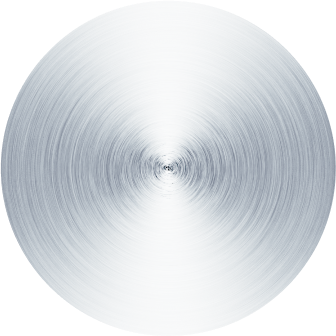

<svg class='track' #trackEl width="120" height="120" fill="none" xmlns="http://www.w3.org/2000/svg">
    <circle stroke-dasharray="" stroke-width="4" stroke="gainsboro" fill="transparent" r="56" cx="60" cy="60" />
    <circle stroke-dasharray="" stroke-width="4" stroke="hotpink" fill="transparent" r="56" cx="60" cy="60" />
    <circle stroke-dasharray="" stroke-width="6" stroke-dasharray="273.529, 273.529" stroke-dashoffset="273.529"
        stroke="white" fill="transparent" r="56" cx="60" cy="60" />
</svg>

<div class="turn-knob-shadow-container">
    <div class="control" vdTurnKnob [track]="trackEl">
        
        
        <div class="control-arrow"></div>
    </div>
</div>